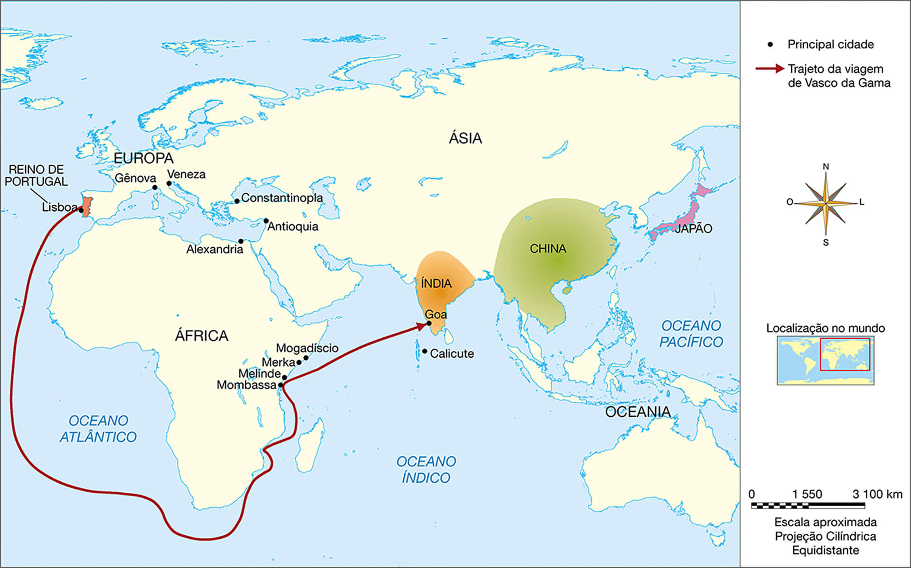
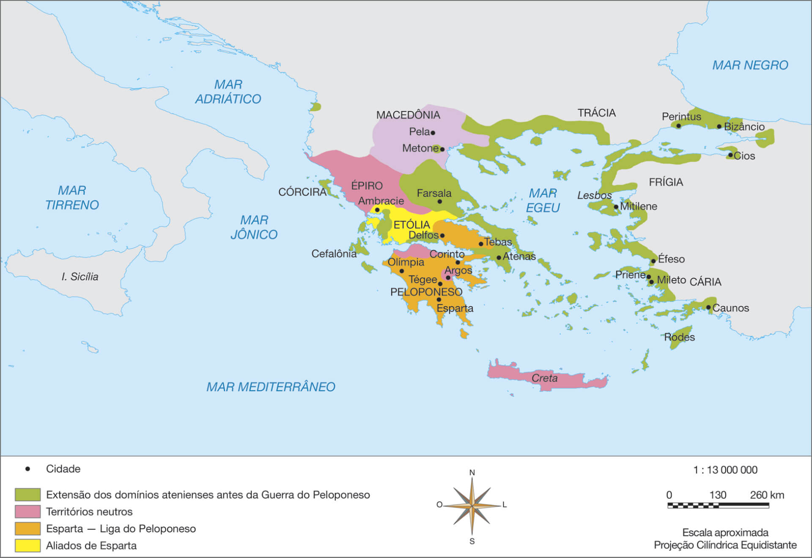
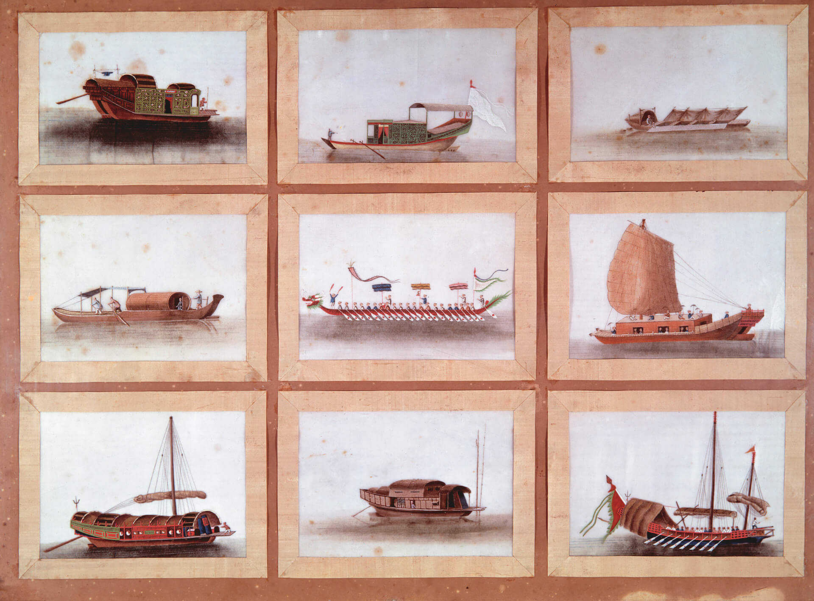
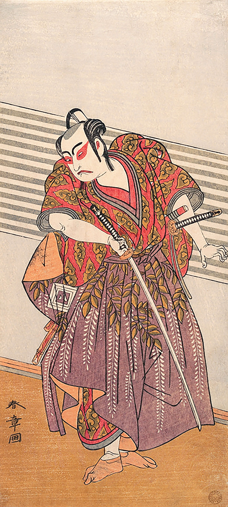

NISHIMURA, Shigeo. Era Azuchi-Momoyama [Século XVI]. 1 ilustração, color. Detalhe. In: ______. História do Japão em imagens. Tradução de Maria Emiko Suzuki, Gustavo H. Gomes de Almeida e Marcelo Yugi Cunita. São Paulo:
Unicamp, 2008.
Essa ilustração mostra o movimento de descarregamento de cargas em um porto do Japão no século XVI.
Introdução
Observe as imagens e responda às seguintes questões propostas:
Que ação está representada na imagem do porto de Lisboa e na imagem do porto japonês?
Verifique novamente a imagem do porto japonês, além da população nativa, que outras pessoas estão representadas nesse porto? O que significa a presença dessas outras pessoas?
Que mudanças a chegada dos portugueses às Índias provocou no Oriente e na Europa?
Objetivos
Localizar geograficamente o Oriente ou as Índias no contexto das Grandes Navegações.
Compreender o que motivou os portugueses a buscar um caminho marítimo para as Índias.
Compreender o “encontro” entre os portugueses e os orientais e as diferenças culturais entre esses grupos.
Reconhecer as distintas relações comerciais estabelecidas entre Portugal e Índia, além de China e Japão.
Analisar a relação entre a presença europeia no Oriente e a resistência da China e do Japão de se incluírem na economia global da época.
Identificar as regiões do Oriente que foram dominadas por portugueses.
Analisar as razões pelas quais os europeus julgavam as culturas orientais como inferiores em relação às culturas europeias.
O processo de expansão marítima promovido pelos navegadores portugueses no século XV tinha como objetivo principal chegar ao Oriente, também denominado de Índias. Portugal buscava um novo
caminho marítimo por meio do Oceano Atlântico, evitando, assim, pagar os altos preços praticados pelos mercadores genoveses e venezianos que dominavam o comércio de produtos orientais no Mar Mediterrâneo. A iniciativa portuguesa
influenciou outros reinos europeus, que também passaram a investir nas navegações em busca de riquezas.
Índias era o termo genérico usado pelos europeus para se referirem às terras do Oriente, de onde vinham os tão desejados produtos luxuosos e especiarias.
Organize as ideias
Você estudou que Portugal foi o primeiro reino a se lançar nas Grandes Navegações. Sobre esse empreendimento português, responda às questões.
Que fatores impulsionaram Portugal a desenvolver condições para a expansão marítima?
Quais eram as motivações econômicas de Portugal para se lançar nas viagens marítimas?
De que maneira a prática mercantilista contribuiu para a expansão marítima na Idade Moderna?
Contatos comerciais entre Portugal e o Oriente
Você sabe que países atualmente se localizam na região que era chamada de “Oriente” ou “Índias” pelos europeus? Observe, no mapa a seguir, a representação da chegada dos portugueses ao Oriente.
Interpretando documentos
Este mapa mostra os principais destinos dos portugueses rumo ao Oriente e a rota de viagem de Vasco da Gama, que comandou a primeira expedição portuguesa que chegou a Calicute, nas Índias. De acordo com o mapa, responda às questões
propostas a seguir.
Viagem de Vasco da Gama

Talita Kathy Bora
Fonte: FERGUSON, Niall. Civilização: Ocidente X Oriente. Tradução de Janaína Marcoantonio. São Paulo: Planeta, 2016. p. 56-57. Adaptação.
De acordo com o mapa, em quais impérios os portugueses aportaram e que eram chamados de Índias?
Em que continente esses impérios estão localizados?
Descreva o percurso realizado por Vasco da Gama.
Índia
Quando Vasco da Gama chegou à cidade de Calicute, na Índia, em 1498, os árabes comercializavam especiarias, que eram transportadas até os portos do Mediterrâneo. Essas especiarias eram vendidas aos mercadores de Gênova e Veneza, que
dominavam o comércio desses produtos na Europa.
Interpretando documen
Leia o texto a seguir, que descreve as condições de viagem dos marinheiros participantes da expedição de Vasco da Gama.
Pensando nos obstáculos que precisaram ser vencidos para desbravar os mares, nenhum supera as agruras do cotidiano a bordo. Tripulantes e passageiros eram confinados a um ridículo espaço, que impedia qualquer tipo de privacidade,
embora oficiais e alguns elementos da alta nobreza tivessem sempre direito a um espaço extra, formando um universo único e peculiar.
Os hábitos de higiene eram precários. Proliferavam pelos corpos os insetos parasitas: pulgas, percevejos e piolhos. O mau cheiro se acumulava, tornando-se, em pouco tempo, insuportável. Ao que muitos vinham a adoecer do estômago,
com fortes enjoos.
RAMOS, Fábio P. Por mares nunca dantes navegados: a aventura dos descobrimentos. São Paulo: Contexto, 2008. p. 26.
A obra de arte apresentada a seguir, criada pelo pintor espanhol naturalizado português José Maria Veloso Salgado, em 1898, foi produzida para um concurso realizado em homenagem ao IV Centenário da Descoberta do Caminho Marítimo para a
Índia. Nessa pintura, o autor retrata o encontro de Vasco da Gama e sua tripulação com o samorim de Calicute.
A palavra “samorim” significa “senhor do mar” e era utilizada pelos indianos para se referirem ao respectivo governante.
Sociedade de Geografia de Lisboa, Lisboa
SALGADO, Veloso. Vasco da Gama perante o samorim de Calecute. 1898. 1 óleo sobre tela, color., 307 cm × 368 cm. Sociedade de Geografia de Lisboa, Lisboa.
Observe a imagem.
Com a orientação de seu professor, discuta coletivamente as seguintes questões propostas:
De que forma os orientais estão vestidos?
E os portugueses? Como estão vestidos?
Observe alguns detalhes da imagem: O que Vasco da Gama está segurando? Que objetos os homens da comitiva portuguesa estão oferecendo ao samorim?
Qual é a expressão do monarca de Calicute e de sua comitiva? Como é o ambiente onde os dois grupos se encontram?
De acordo com a citação do livro Por mares nunca dantes navegados, é possível acreditar que a imagem reproduza exatamente as condições dos navegadores portugueses quando chegaram a Calicute? Justifique a sua resposta.
Por que o artista retratou os portugueses dessa forma?
O navegador português Vasco da Gama, quando perguntado sobre o que buscava no Oriente, teria respondido: “Cristãos e especiarias”. Quais eram os objetivos de Vasco da Gama no Oriente?
Em seu caderno, registre as conclusões da turma sobre essas questões.
Os comerciantes árabes, que não desejavam concorrência nos negócios que efetuavam, não gostaram da presença portuguesa em suas praças de comércio.
Os portugueses também não foram bem recebidos pelo samorim, que se sentiu ofendido com os presentes que recebeu: chapéus, bacias, azeite, mel e duas cartas do rei português D. Manuel, que propunha um acordo de comércio. Diante dos
produtos trazidos, o samorim não manifestou interesse em relação à carta do rei português. Os portugueses foram considerados violentos e agressivos.
Quando o rei de Calicute olhou com desconfiança para os produtos que os portugueses trouxeram de Lisboa, Vasco da Gama capturou 16 pescadores como reféns. Em sua viagem à Índia, liderando 15 navios, ele bombardeou Calicute e
mutilou terrivelmente a tripulação dos navios capturados. Conta-se que, em outra ocasião, ele trancou os passageiros a bordo de um navio com destino a Meca e o incendiou.
FERGUSON, Niall. Civilização: Ocidente X Oriente. Tradução de Janaína Marcoantonio. São Paulo: Planeta, 2016. p. 60.
Apesar das diferenças e da dificuldade de comunicação entre os dois lados, os portugueses obtiveram permissão para comprar as mercadorias indianas. O navegador português retornou a Lisboa em setembro de 1499. Suas embarcações estavam
carregadas com toneladas de especiarias, como gengibre, pimenta e canela; estima-se que o lucro obtido com a venda desses produtos tenha sido de 4 000%.
Diante do sucesso da viagem, D. Manuel mandou outras expedições com a intenção de estabelecer o comércio português com os indianos, mesmo que violentamente.
Na segunda expedição que fizeram para a Índia, em 1500, utilizaram armas de fogo e eliminaram todos aqueles que se colocavam contra os portugueses. Invadiram terras, construíram feitorias, casas e igrejas. Diante do poder de destruição
dos canhões dos navios portugueses, líderes políticos indianos (príncipes e sultões) foram obrigados a aceitar alianças político-militares, que proporcionavam benefícios para os comerciantes portugueses.
Sob o aspecto cultural, a chegada dos portugueses causou grande impacto entre os indianos, que os descreviam como gente bonita, de pele muito branca, usando botas e chapéus de ferro, incapazes de parar em parte alguma, estando
sempre em movimento. Por desconhecerem o pão e o vinho, acreditavam que os estrangeiros alimentavam-se de sangue e pedras brancas. Segundo relatos da época, os lusos eram temidos sobretudo por disporem de armas com som de trovão –
de canhões – capazes de destruir um castelo de mármore com uma única bala. A exemplo do que ocorria com os nativos da América, muitos indianos viam os portugueses como seres místicos invencíveis.
RAMOS, Fábio P. No tempo das especiarias: o império da pimenta e do açúcar. São Paulo: Contexto, 2004. p. 120.
Índia: cidades conquistadas pelos portugueses – século XVI

Fonte: WRIGHT, Jonathan. Os jesuítas: missões, mitos e histórias. Rio de Janeiro: Relume Dumará, 2006. Adaptação.
Por volta de 1505, os portugueses conquistaram a cidade de Cochin, em seguida as cidades de Goa, Damão, Bombaim (também conhecida como Mumbai) e Diu. Para administrar todos esses territórios, em 1505, criaram o Estado Português na
Índia, inicialmente sediado em Cochin e, em 1530, transferido para Goa.
Portugal se tornou o mais importante exportador de pimenta-do-reino para a Europa em decorrência das viagens anuais para a cidade de Goa, principal porto dos portugueses. Também eram comercializados perfumes, algodão, gengibre, canela,
noz-moscada, cravo, diamante indiano, corante azul (índigo), seda chinesa e nitrato de potássio (usado na fabricação de pólvora).
[GOA]. 1582. In: KEMPEN, Gottfried von. Civitates Orbis Terrarum. Colônia, 1582. v. 1.
Os comerciantes árabes que dominavam o comércio em Goa foram expulsos pelo poder militar dos navios portugueses. Deter poder sobre Goa daria aos portugueses domínio do comércio no Oriente.
Diferenças religiosas
A expansão marítima não tinha apenas intenções comerciais. A Igreja Católica, que havia perdido muitos fiéis na Europa com a Reforma Protestante, também tinha interesse nessas expedições, pois imaginava que assim poderia converter
outros povos à fé católica. Por esse motivo, as expedições contavam com membros do clero como integrantes das tripulações. Logo que se instalavam em um local, costumavam celebrar uma missa e iniciar a construção de uma igreja. Com os
comerciantes, chegaram missionários da Companhia de Jesus aos portos indianos. A missão deles era converter os indianos à fé católica.
CHAKRAUTTY, Utpal. Igreja do Rosário [construída em 1543], Goa. 2015. 1 fotografia, color.
Em Goa, em 1560, foi instalado um Tribunal de Santo Ofício, dando início ao processo de conversão forçada dos habitantes ao cristianismo.
Converter os povos orientais ao cristianismo não foi uma tarefa fácil. Os indianos tinham religiões próprias, como o hinduísmo, o budismo e o
islamismo, e grande parte deles manteve suas crenças.
O hinduísmo é uma religião que surgiu por volta de 3000 a.C. Sua denominação tem origem no nome do Rio Indo, importante rio da Índia. Os hindus acreditam na existência de vários deuses, na reencarnação e no carma –
representado por uma circularidade das ações, em que o bem ou o mal praticado acaba voltando para quem o praticou aqui na Terra; assim, quem pratica o bem recebe o bem, e quem pratica o mal recebe o mal. Os hindus acreditam ainda que
os seres humanos não são iguais entre si, pois cada um tem uma alma com um nível diferente de evolução.
O budismo foi fundado por Sidarta Gautama, o chamado Buda. Filho de um príncipe do Nepal, Sidarta queria atingir a “iluminação”, como forma de abandonar o sofrimento, buscando o nirvana, que seria um estado de
desprendimento espiritual do corpo físico. O budismo se manteve por muito tempo na Índia e no Ceilão (atual Sri Lanka), sendo levado posteriormente para a China. Os budistas acreditam na reencarnação de seres humanos em outro corpo na
hora da morte.
A sociedade indiana foi dividida em castas, ou seja, em grupos específicos de acordo com o nascimento da cada indivíduo. A divisão em grupos se originou no século XV a.C. Não havia a possibilidade de um integrante de determinada casta
se casar com um integrante de outra.
Originalmente havia apenas quatro castas. Os brâmanes eram sacerdotes que oravam; os xátrias eram soldados que lutavam; os vaixás, os fazendeiros e artífices que trabalhavam; e por fim os sudras, na extremidade inferior da escala,
lidavam com tudo o que fosse impuro.
LLOYD, Christopher. O que aconteceu na Terra? Tradução de Ivo Korytowski. Rio de Janeiro: Intrínseca, 2011. p. 166.
Para os sudras, também chamados de intocáveis, que viviam na condição mais inferior da sociedade indiana, a crença no hinduísmo lhes dava uma esperança. Qual seria a crença do hinduísmo que dava esperança aos sudras?
Com a abertura do caminho marítimo para as Índias e com o sucesso financeiro das viagens de Vasco da Gama e de Pedro Álvares Cabral, Portugal decidiu ampliar as relações comerciais com o Oriente. Nas primeiras décadas do século XVI, os
portugueses chegaram à China e ao Japão.
China
Os chineses chamavam o seu território de Império do Centro, por considerarem estar no centro do mundo. Em 1513, os portugueses chegaram à China e encontraram um império muito diferente da Índia. A primeira e mais significativa
diferença estava no poder da marinha militar chinesa em relação à indiana. A grande força militar dos chineses, no entanto, não foi o único fator que impressionou os portugueses.
A estrutura que compõe a Muralha da China na atualidade foi erguida no século VII, quando foram construídos alguns trechos dessa fortificação, provavelmente, com a intenção de segurança ou de preservar a comercialização da seda.
PARTENSKY, Peretz. Muralha da China. 2008. 1 fotografia, color.
A China era vista como um próspero império e um celeiro de invenções: papel, impressão em blocos de madeira, construção de canais navegáveis, pólvora, pontes suspensas por correntes, bússola
magnética, pasta e escova de dente, papel higiênico, inseticida, fósforo, cartas de baralho e papel-moeda são alguns exemplos.
Em 850, carvão, enxofre e minérios foram misturados por monges taoistas (do taoismo, ensinamento filosófico-religioso chinês), que buscavam um elixir para a vida eterna. A mistura foi usada pelos árabes na Península Ibérica, no
século XIV, tendo sido aperfeiçoada pelos ingleses para a produção de canhões. Assim surgiu a pólvora.
Em virtude do poderio militar chinês, os portugueses adotaram uma abordagem diferente da utilizada na Índia, que havia se fundamentado na violência.
Na China, os portugueses tentaram estabelecer relações diplomáticas e, diante da recusa das autoridades chinesas em fazer acordos, em vez de confrontá-los com violência, optaram por praticar o comércio de forma clandestina com os
mercadores chineses nos portos do Império.
A casa do escritor francês Victor Hugo (1802-1885), situada em Paris, foi transformada em um museu. No local, há uma mostra da influência e do intenso comércio de produtos chineses na Europa. Na imagem, observamos a sala de estar da
construção.
Acervo Lys Villela
VILLELA, Lys. Sala de Juliette Drouet na Casa de Victor Hugo, Paris. 2012. 1 fotografia. color.
Os portugueses não tinham muitos produtos que interessassem aos chineses, mas levaram prata (proveniente de terras que na atualidade são alemãs). Esse item tinha uma enorme demanda na China da Dinastia Ming, pois a prata era usada para
cunhar as moedas, que haviam substituído o dinheiro de papel. Desse modo, os portugueses compravam produtos luxuosos, como seda (utilizada para a confecção de vestimentas), finas porcelanas, pólvora e alguns temperos, além de ópio
(substância retirada da papoula e usada como medicamento, pois provoca sonolência e analgesia) e almíscar (extraído do abdômen dos cervos e processado no Cantão; usado na fabricação de perfumes).
Em 1555, a Coroa portuguesa estabeleceu um acordo com o imperador chinês para que um entreposto comercial fosse construído na ilha de Macau. Ao chegarem a Macau, os portugueses ergueram um portão onde escreveram: “Temam nossa
grandeza e respeitem nossa virtude”.
Interpretando documentos
Leia o texto a seguir e observe a imagem.
Essa superioridade da China vem então sobretudodos progressos efetuados no domínio da construção naval. As ajudas à navegação, mapas, bússola, compasso, meios de medir o tempo, a posição, etc., não são muito disseminados no começo
do século XV. Mas, enquanto os europeus se serviam ainda de galeras de uma única vela, muito lentas, ou de naus mais rápidas, porém frágeis, os juncos de alto-mar dos chineses surpreendem os viajantes estrangeiros como Marco Polo.
Estes têm, muitas vezes, 60 metros de comprimento e 30 de largura e têm mais de 50 cabines. [...]
DRÈGE, Jean-Pierre. Marco Polo e a rota da seda. Tradução de Ana Roiter. Rio de Janeiro: Objetiva, 2002. p. 112-114.

Fotoarena/DPA
BIOMBO Namban (Namban Byobu). 1 pintura sobre papel, color. Detalhe.
Essa imagem, um detalhe da pintura do biombo, mostra seis tipos de embarcações chinesas em junco.
De acordo com os documentos, responda a estas questões:
Os portugueses foram os pioneiros na navegação no Oceano Índico durante a Idade Moderna? Justifique sua resposta.
De acordo com o fragmento de texto, a que se deve a superioridade chinesa na navegação?
Organize as ideias
Leia o texto a seguir.
Não só o Ocidente tinha vontade de expandir, como também dispunha de tecnologia necessária ao sucesso dessa empreitada: embarcação a vela aparelhadas. Esse fator o distingue da China e dos territórios islâmicos e ajuda a explicar
por que o Ocidente, e não as civilizações orientais, deu início a uma era de conquista que resultou no domínio global. Além de ser mais fácil de manobrar e mais rápido em mares abertos do que as galés movidas a remo, o navio a vela
tinha uma vantagem tática adicional: era equipado com canhões, abaixo do convés, que podiam atirar e danificar ou afundar as embarcações inimigas a distância. As galés dos árabes no oceano Índico e os juncos dos chineses não eram
aparelhados com esse tipo de armas. Numa batalha, valiam-se da antiga tática de abordagem, que consistia em colocar-se ao lado do navio inimigo, quebrar-lhes os remos e subir a bordo para uma luta no convés.
PERRY, Marvin. Civilização ocidental: uma história concisa. São Paulo: Martins Fontes, 2015. p. 269.
Com base na leitura, responda à seguinte questão.
Quais são as diferenças entre o projeto de navegação dos chineses e o dos portugueses?
Japão
Em 1543, quando os portugueses chegaram ao Japão, encontraram um território dividido internamente em conflitos. Os daimios, que eram os grandes proprietários de terra, buscavam aumentar o seu poder e entraram em conflito pela posse de
terras.
O imperador e os xoguns, sem autoridade, não conseguiam conter as guerras internas. Aproveitando-se dessa situação, os portugueses chegaram aos portos japoneses e estabeleceram relações
comerciais. Um dos produtos levados pelos portugueses que despertou grande interesse dos daimios foram armas de fogo, especialmente o mosquete. Com a aquisição de armas, as técnicas tradicionais de guerra da cultura japonesa foram
modificadas. Os daimios que ainda mantinham um exército de samurais (integrantes da nobreza que passavam por um longo e cuidadoso treinamento) foram facilmente derrotados pelos mosqueteiros.
Xoguns eram os títulos conferidos àqueles que ocupavam o mais alto cargo militar.
Os guerreiros samurais lutavam usando uma arma chamada katana (espada com lâmina curva) e eram movidos por um rígido código moral, com base na lealdade e na coragem.

Museu Metropolitano de Arte de Nova Iorque, Nova Iorque
KATSUKAWA, Shunsho. O segundo Ichikawa Yaozo como samurai. 1773. Impressão em madeira policromada, 31,3 cm × 14,1 cm. Museu Metropolitano de Arte, Nova Iorque.
Desembarque de produtos trazidos pelos portugueses ao Japão. Os portugueses traziam armas, açúcar, seda chinesa e salitre, usado para produzir a pólvora.
DOMI, Kano. (1593-1601). 1 biombo, madeira de criptoméria, papel de amoreira, pigmentos minerais e aglutinante, folha de ouro, pó de ouro e prata, laca, ferragens de cobre douradas, 172,8 cm × 2 cm × 380,8 cm (aberto). Museu
Nacional de Arte Antiga, Lisboa. Detalhe.
Com o estabelecimento de relações comerciais, a prata japonesa começou a ser levada pelos portugueses para a Índia, onde era trocada por especiarias, porcelana e seda. O cobre japonês também era levado para a Índia e usado na
fabricação de navios portugueses.
Além de metais, os japoneses comercializavam porcelanas, laca (resina produzida por certas árvores nativas do Oriente) e pedrarias com os portugueses.
Os missionários jesuítas receberam autorização para se estabelecerem no Japão; a cidade de Nagasaki, fundada pelos portugueses, tornou-se a maior cidade cristã do Japão.
No século XVII, com o fortalecimento do xogunato, encerrou-se a guerra entre os daimios. Em 1635, o xogunato de Tokugawa proibiu a prática do cristianismo, determinando a perseguição aos cristãos. O xogum decretou o isolamento do Japão
por meio do Edito de Sakoku (país fechado), fechando todos os portos para os navios estrangeiros e proibindo os japoneses de comercializar fora do Japão.
A cidade de Nagasaki foi fundada pelos portugueses. Com o fechamento do Japão para o comércio, em 1639, os portugueses foram expulsos, e os cristãos perseguidos.
OS MÁRTIRES de Nagasaki. [Século XIX]. 1 óleo sobre tela, color. Coro de La Recoleta, Cuzco.
Interpretando documentos
Retome a página de abertura do capítulo e observe a imagem de desembarque de mercadorias portuguesas em um porto japonês.
Em sua opinião, a movimentação representada influenciou a decisão do xogum de fechar o Japão para o comércio? Que resultados essa medida deveria provocar na economia japonesa?
Em 1580, as especiarias abundavam na Europa, e outros reinos conquistaram mercados no Oriente, onde espanhóis, britânicos e holandeses passaram a atuar.
O poder de Portugal, que estava envolvido em problemas de sucessão, declinou no Oriente, ainda que a presença de portugueses em entrepostos comerciais, como Macau e Goa, tenha garantido a manutenção dessa rota até o século XIX.
Por outro lado, a colônia de Portugal na América direcionou os planos de colonização portugueses.
Outras histórias
A expansão marítima dos reinos europeus sobre a África, as Índias e a América difundiu uma série de produtos raros ou desconhecidos até então na Europa no início do século XVI.
Leia a respeito de alguns desses produtos.
Fundação Biblioteca Nacional, Rio de Janeiro
DELISLE, Guillaume. Mapa da América. [entre 1722 e 1763]. color., 48,5 cm × 61,3 cm. Biblioteca Nacional, Rio de Janeiro.